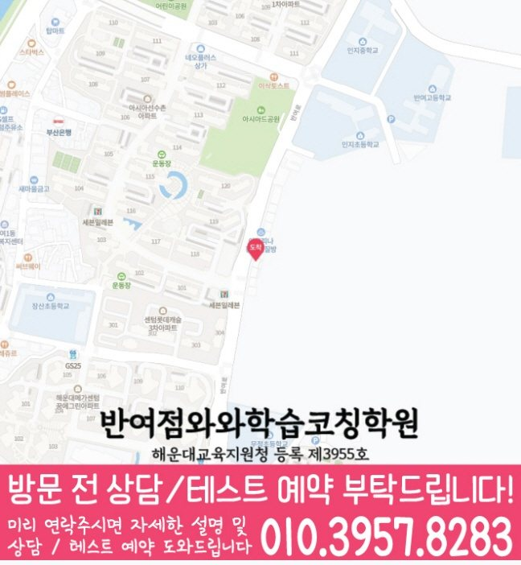

High school Korean · English · Math
반여동 고등학생 국영수학원
반여동 고등학생 국영수학원 선택 전 고등 내신 자료, 최근 오답과 과목별 가능 학년, 센터 위치·비용 확인 기준을 안내합니다.
01 Quick answer
반여동에서 먼저 확인할 내용
반여동에서 고등학생 국영수학원을 찾는다면 와와학습코칭센터 반여점의 과목별 가능 학년을 먼저 확인하세요. 제공된 고등학교 참고 자료와 학생의 실제 교재를 대조하고, 학생의 실제 풀이 기록에 맞게 세 과목을 같은 분량으로 늘리기보다 과목별 완료 기준과 재확인 날짜를 정해야 합니다.
대표 학생 상황
세 과목의 과제 순서와 오답 복습 시점을 스스로 정리하기 어려운 고등학생


010-6839-8283상담 전 핵심 안내
부산광역시 해운대구 반여동에서 영어, 수학, 국어를 함께 준비하는 학생을 위해 지역 센터의 학습 흐름을 안내합니다. 반여동 다음 학습 단계에서는 학습 시간 배분을 바탕으로 설명할 수 있는 범위를 확인합니다. 학생마다 목표와 수준이 다르기 때문에 수업과 코칭을 통해 학습 기록이 이어지도록 돕습니다. 부산광역시 해운대구 반여동에서 고등학생 국영수 관리를 고민한다면, 첫 상담에서 학생의 시험지와 학습 루틴을 함께 보는지부터 확인하는 편이 좋습니다. 이 사례를 바탕으로 반여동 학생에게 필요한 점검 순서를 확인합니다.
현재 자료에서 먼저 확인할 학습 신호
반여동 과목별 점검에서는 과제 이행 기록을 바탕으로 반복 오류를 점검합니다. 처음부터 많은 문제를 풀기보다, 개념 이해도와 풀이 습관, 실수 패턴을 먼저 확인해 현재 수준에 맞춘 학습 순서를 설계합니다.
영어·수학·국어 균형 학습. 반여동 학습 순서를 정할 때는 학습 시간 배분을 바탕으로 다음 학습 계획을 조정합니다.
오답이 쌓이면 학습 변화가 기록에 남는지 확인합니다. 틀린 이유를 ‘개념 부족/조건 미확인/계산 실수/독해 오류’처럼 원인별로 정리해 같은 실수가 반복되지 않도록 지도합니다.
내신 기간이 가까워질수록 커지는 불안은 “반여동 고등학생 국영수학원에서 우리 아이가 세 과목을 모두 따라갈 수 있을까”라는 점입니다. 부산광역시 해운대구 반여동 기준으로는 주요 과목인 국어·영어·수학을 한꺼번에 늘리는 계획보다는 과목마다 다시 확인할 내용과 날짜를 먼저 정해야 합니다. 고등학생의 현재 범위와 공부 시간을 함께 살펴 이번 주에 바꿀 행동을 정해야 합니다. 반여동에서 수업을 비교할 때는 최근 단원, 틀린 유형과 실제 과제 시간을 한 기록에서 확인하는 편이 좋습니다. 학습 변화를 시작하려면 반여동 학생이 직접 수행할 한두 가지 행동을 주간표에 배치해야 합니다.
풀이 과정과 복습을 연결하는 기준
설명보다 이해를 우선합니다. 학생이 어디에서 막히는지 질문과 풀이 과정을 통해 확인하고, 필요한 개념을 다시 연결해 이해가 남도록 수업합니다.
학습 태도까지 함께 봅니다. 숙제, 복습, 오답 정리의 루틴을 체크해 수업 시간이 일회성으로 끝나지 않게 지속 점검합니다.
영수·국어를 한 흐름으로 연결. 영어 독해 지문 읽는 습관, 수학 문제 조건 해석, 국어 문장 이해까지 학습 습관을 통합적으로 잡아줍니다.
반여동 고등학생 세 과목 학습 상담의 내신 대비는 시험 기간에만 갑자기 시작되는 과정이 아닙니다. 반여동에서 보완할 부분이 있는 학생에게는 수행평가가 겹치면 지필 대비 시간이 줄어들 수 있으므로 주간 계획에서 과목별 최소 학습량을 따로 잡아야 합니다. 부산광역시 해운대구 반여동 고등학생이 국어·영어·수학을 함께 관리하려면 고등학생 내신은 하루 집중보다 누적 관리가 더 큰 영향을 주므로, 평소 과제와 시험 대비를 분리하지 않는 편이 좋습니다. 반여동 고등학생의 국어·영어·수학 학습 점검에서 내신 대비는 새 문제를 많이 푸는 것보다 학교 수업 내용과 오답 기록을 다시 연결하는 과정이 중요합니다.
반여동 고등학교 자료를 수업 계획에 반영하는 방법
과목별 기록을 살펴보면, 제공된 고등학교 참고 목록은 반여고입니다. 확인 순서를 세울 때, 이 목록은 수업 가능 여부를 보장하지 않으며, 상담에서 학생이 가져온 실제 학교 자료를 대조하기 위한 정보입니다.
학교 자료를 대조할 때, 상담에서는 시험 범위표·학교 프린트·수행평가 일정 자료를 과목별로 나누어 현재 범위와 반복 오답을 확인합니다. 실제 학습 범위를 확인하면, 반여동 학생에게 필요한 것은 학교명 반복보다 자료에서 찾은 문제를 다음 계획으로 바꾸는 과정입니다.
수업 전후 기록을 이어 가는 방법
1. 현재 수준 확인. 학년, 학교 진도, 최근 시험 결과를 바탕으로 부족한 단원과 자주 틀리는 유형(원인)을 먼저 진단합니다.
2. 개념 정리와 유형 학습. 바로 문제풀이로 넘어가기보다 핵심 개념을 정리한 뒤, 대표 유형부터 응용까지 단계적으로 연습합니다.
3. 오답 관리와 학습 피드백. 틀린 문제는 재풀이만 하는 것이 아니라 왜 틀렸는지 원인을 정리하고, 다음 학습에서 어떻게 적용할지까지 함께 점검합니다.
다음 학습 단계로 이어지는 확인 기준
초등. 반여동 수업 내용을 점검할 때는 최근 풀이 기록을 바탕으로 설명할 수 있는 범위를 확인합니다. 중등으로 이어질 핵심 기초를 부담 없이 단계별로 준비합니다.
중등. 내신 대비를 위해 단원별 개념-유형-오답 흐름으로 반복 점검합니다. 영어 문법·독해, 수학 단원 유형, 국어 독해·서술 훈련을 함께 강화합니다.
고등. 내신과 수능형 문제풀이를 구분해 전략적으로 접근합니다. 약한 단원, 시간 관리, 오답 패턴을 집중 관리해 학습 변화에 집중합니다.
시험 대비. 학교 시험 범위와 제공된 시험지의 문항 유형에 맞춰 복습 계획을 단계별로 조정합니다. 시험 전에는 실수 유형과 자주 틀리는 문제를 우선 점검하며 최종 완성도를 높입니다.
반여동 지역 센터는 학생의 현재 상태를 기준으로 필요한 학습을 정리하고, 상담을 통해 영어·수학·국어 학습 방향을 자세히 정리합니다.
02 Consultation examples
반여동 학부모 상담 상황 예시
아래 내용은 실제 고객 후기나 성적 결과가 아니라, 상담에서 확인할 질문을 이해하기 위한 상황 예시입니다.
반여동 고등학생의 상담을 가정한 예시입니다. 국어·영어·수학 점수만 비교하지 않고 시작이 늦어진 과제, 반복한 오답과 학교 일정을 나누어 본 뒤 이번 주에 실행할 한두 가지를 정리합니다.
반여동에서 제공된 고등학교 참고 정보인 반여고의 목록과 학생의 실제 학교 자료를 대조해 질문하는 상담 예시입니다. 센터의 개설 과목과 가능 학년을 확인한 뒤 학생의 귀가 시간, 과제량과 시험 기간 보강 기준을 같은 메모에 정리합니다.
03 FAQ
반여동 고등학생 국영수학원 자주 묻는 질문
학부모님이 상담 전에 자주 확인하는 내용을 질문과 답변으로 정리했습니다.
반여동 고등학생 국영수학원 상담에서 첫 번째로 확인하는 내용은 무엇인가요?
내신 범위와 모의고사 오답을 한 계획 안에 배치하기 어렵다면 국어 근거 찾기, 영어 해석과 수학 풀이 단계를 따로 기록해 상담 자료로 준비하는 편이 좋습니다.
국어·영어·수학 과제량은 반여동 고등학생에게 어떻게 배분하나요?
반여동 상담에서는 세 과목을 같은 분량으로 나누기보다 최근 시험과 학교 일정, 반복 오답을 기준으로 우선순위를 정합니다. 과목별 완료 기준이 있어야 계획과 실제 실행의 차이를 확인할 수 있습니다.
반여동 학교별 교과 자료는 어떤 방식으로 확인하나요?
반여고 등은 확인된 참고 학교명이며 수업 가능 학교를 단정하지 않습니다. 학생의 실제 자료와 센터별 개설 과목을 함께 놓고 상담하세요.
반여동 상담 전에 센터 위치와 교습비는 어디에서 확인하나요?
센터별 교습비 확인 버튼에서 제공 자료를 볼 수 있습니다. 실제 방문 위치는 위 센터 확인 정보에서 확인할 수 있습니다. 반여동 학생에게 맞는 시간표가 있는지와 고등학생 수업 범위는 희망 센터의 현재 안내를 기준으로 판단합니다.
04 Continue
반여동 페이지 이동
카테고리 전체 지역 또는 앞뒤 지역 안내로 이동할 수 있습니다.